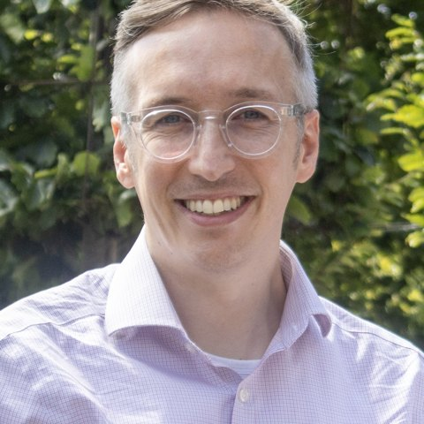

Team
The people behind the work
AAirDS brought together geriatricians, microbiologists, virologists, statisticians, infection control, engineers and an industrial modelling partner on the same wards.

Matthew Butler
Consultant geriatrician; chief investigator, AAirDS
Cambridge University Hospitals NHS Foundation Trust
Victoria Keevil
Geriatrician; senior author
University of Exeter; Cambridge University Hospitals
Rebecca Brock
Statistician; trial analysis
MRC Biostatistics Unit, University of Cambridge
Robert Goudie
Statistician
MRC Biostatistics Unit, University of Cambridge
Chris Illingworth
Genomic epidemiology and transmission modelling
MRC University of Glasgow Centre for Virus Research
Christine Peters
Consultant microbiologist
NHS Greater Glasgow and Clyde
Theodore Gouliouris
Consultant microbiologist
Cambridge University Hospitals NHS Foundation Trust
Andrew Conway Morris
Intensive care medicine; microbial bioaerosols
University of Cambridge; Cambridge University Hospitals
Clive Beggs
Engineering and applied physiology; indoor air
Leeds Beckett University
Rachel Thaxter
Infection control
Cambridge University Hospitals NHS Foundation Trust
Stephanie Evans
Statistics, modelling and economics
UK Health Security Agency
Ghassen Yahiaoui
Computational fluid dynamics
Dassault Systèmes
Emmanuel Vanoli
Computational fluid dynamics
Dassault Systèmes
Cyril Crawford
Computational fluid dynamics
Dassault Systèmes
Alessandro Burkia
Computational fluid dynamics
Dassault Systèmes
Radu Chelariu
Computational fluid dynamics
Dassault Systèmes
Roles and affiliations as given in the AAirDS publications; photographs to follow. Many more colleagues in infection control, estates, nursing and the laboratories made the study possible; a fuller acknowledgement appears in each paper.